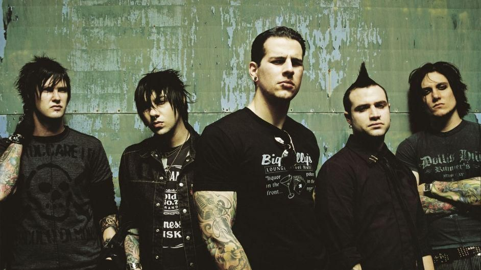

Banda avenged

Biografia
Avenged Sevenfold (também conhecido como A7X) é uma banda norte-americana de heavy metal formada em 1999 na cidade de Huntington Beach, na Califórnia.
A banda chegou ao mainstream com o álbum City of Evil.
O sucesso da banda continuou com seu álbum homônimo e seu álbum de 2010, Nightmare, gravado com Mike Portnoy devido à morte de seu ex-baterista, The Rev.
O Avenged Sevenfold começou tocando metalcore em seus dois primeiros álbuns, mas após alguns anos a banda mudou seu estilo musical no álbum City Of Evil e hoje é considerada uma revelação do heavy metal na década.
O Início (1999-2004)
Ventura Theater, em 2008: local onde o Avenged Sevenfold fez shows importantes antes de fazer sucesso no mainstream.
A banda foi formada por M.Shadows e Zacky Vengeance.
Eles eram amigos e estudavam na mesma escola e suas bandas anteriores, Successful Failure e Mad Action respectivamente não tinha dado certo.
Logo convidaram The Rev e Matt Wendt para completar a formação de sua nova banda.
O Avenged Sevenfold (também conhecido como A7X) usa nomes artísticos pois segundo eles estes nomes definem bem o que eles se transformam ao vivo.
Durante os anos de 1999 e 2000, inúmeras demos foram gravadas como The Art Of Subconscious Illusion e We Come Out At Night.
O primeiro álbum do Avenged Sevenfold, Sounding the Seventh Trumpet foi gravado quando os integrantes tinham apenas dezoito anos em 2000 e originalmente foi lançado pela sua primeira gravadora, Good Life Recordings em 2001.
Inicialmente seguindo um metalcore, que tinha suas primeiras cenas nessa época.
Sendo que a música Streets foi escrita por M.Shadows e a banda da qual ele participou antes do Avenged Sevenfold, a Successful Failure. Após o guitarrista solo, Synyster Gates ter se juntado à banda, a faixa To End the Rapture foi regravada com Gates tocando e o álbum foi relançado pela Hopeless Records em 2002.
Nessa época fizeram vários shows importantes, com bandas como Shadows Fall e Mushroomhead e tocaram na Take Action Tour.
Após isso, Johnny Christ se juntou à banda substituindo Justin Sane, sendo o seu quarto baixista e lançaram o álbum seguinte Waking The Fallen pela Hopeless Records em agosto de 2003.
Este disco teve um bom reconhecimento pela revista Rolling Stone e pela Billboard e é considerado um dos melhores álbuns de metalcore da história,além de ter vendido três mil cópias na primeira semana de lançamento.
Ganharam ainda mais reconhecimento tocando na famosa turnê, Vans Warped Tour de 2003.
Em 2004 voltaram a tocar na Warped Tour e com o contrato para assinar com a Warner Bros. Records, o Avenged Sevenfold decidiu lançar o clipe de Unholy Confessions no mesmo ano, com intuito de promover a banda para trabalhos futuros.
Este clipe foi destaque na MTV2's Headbanger's Ball.